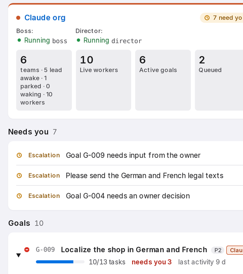

A Mac can watch through the Herdr desktop app. The factory does not run on macOS yet.
Cursor is optional.
The software is MIT.
Manual steps are in the repository: docs/SETUP.md.
/plugin marketplace add volekerb/hivemill
/plugin install hivemill
/hivemill:setupA Mac can watch through the Herdr desktop app. The factory does not run on macOS yet.
Cursor is optional.
The software is MIT.
Manual steps are in the repository: docs/SETUP.md.
